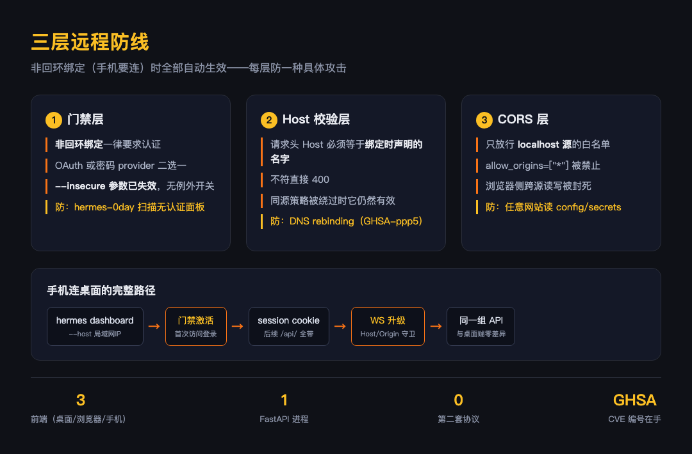

大家好我是郑同学。EP01 说过桌面、网页、终端三个前端连同一个 gateway。这一篇把"网页前端"拆开看：web/ 目录是一个独立的 Vite+React 工程，它凭什么能用浏览器管一个能读写文件、跑终端的 agent 后端。答案分两半：前一半是"同源"——WebUI 和桌面端走同一套 API、同一个进程；后一半是"防线"——非回环绑定时强制认证、Host 头校验防 DNS rebinding、CORS 锁死本机源。前一半让手机能连，后一半让连上不放人。
● ● ●
先纠正一个容易有的误解。web/ 不是"网页版聊天窗"，它是配置与监控面板：状态页看 agent 活跃会话、配置页动态编辑 config、环境页管 API keys。README 第一句就定了性。
Browser-based dashboard for managing Hermes Agent configuration,
API keys, and monitoring active sessions.
工程形态（web/README.md）：Vite + React 19 + TypeScript + Tailwind v4，shadcn/ui 风格组件手写。开发时 hermes web --no-open 起 FastAPI 后端 + Vite dev server 代理 /api；生产形态是 npm run build 产物打进 hermes_cli/web_dist/，由 FastAPI 直接伺服——hermes dashboard 起的 9119 端口伺服的就是这个构建产物。
值得停一下的是分层：前端只是壳，所有能力都是后端 API。桌面端渲染进程、浏览器、手机浏览器，三个壳调的是同一个 FastAPI 进程的同一组 /api/ 端点。这就是 EP01"一次实现三个前端"的兑现处——WebUI 没有第二套协议，没有独立后端，甚至没有独立的构建链（构建产物直接进 Python 包）。
● ● ●
WebUI 的敏感端点不是裸奔的。两套鉴权方案，按绑定模式恰好激活一套（web_server.py:345）。
# hermes_cli/web_server.py:345（_require_token docstring）
# 两种鉴权方案保护 dashboard，按绑定方式恰好激活一种：
#
# 回环 / --insecure 模式（auth_required False）：
# 临时 _SESSION_TOKEN 注入 SPA HTML，
# 前端经 X-Hermes-Session-Token 头回传，这里校验
#
# 门禁 / OAuth 模式（auth_required True）：
# _SESSION_TOKEN 不注入（SPA 用 session cookie 认证），
# gated_auth_middleware 已在 cookie 层挡过，到这里就是已认证
回环绑定（默认）信任本机操作者，但仍然有 token——每次启动生成一个 secrets.token_urlsafe(32)，注入到页面里由前端回传，比较用 hmac.compare_digest（恒定时间比较，防时序侧信道）。非回环绑定时换成 OAuth 或密码的 session cookie 门禁。"本地"不等于"不设防"：能跑在你电脑上的浏览器页面，不止你自己开的那些。
● ● ●
把 dashboard 绑到非回环地址（手机要连，就得绑），安全模型整个切换。切换规则是一张真值表（web_server.py:391）。
# hermes_cli/web_server.py:391（should_require_auth）
# 真值表：
# host == 回环 → False（免认证——仅本机，信任操作者）
# host != 回环 → True（门禁启动——OAuth 或密码）
#
# RFC1918 / CGNAT / link-local 一律按 PUBLIC 处理——
# 同一局域网里的敌意设备，就是这个门禁要防的威胁模型
def should_require_auth(host: str, allow_public: bool = False) -> bool:
...
return host not in _LOOPBACK_HOST_VALUES
第一层：非回环绑定强制门禁，没有例外开关。注释里写得很硬：--insecure 这个旧逃生舱被保留了参数名但不再有任何效果——非回环绑定永远要求认证。这不是过度设计，是补过洞：注释原话提到 2026 年 6 月的 hermes-0day MCP-persistence 攻击活动，扫的就是 --insecure --host 0.0.0.0 暴露在公网的无认证 dashboard，攻陷后经 MCP 配置持久化。内网 IP 不算安全——RFC1918 私网地址被刻意按公网对待，"同一 WiFi 里的陌生设备"就是这个门禁的威胁模型。
第二层：Host 头校验，防 DNS rebinding（web_server.py:451）。
# hermes_cli/web_server.py:451（host_header_middleware docstring）
# 拒绝 Host 头与绑定接口不符的请求。
#
# 防 DNS rebinding：受害者浏览器开着一个 localhost dashboard，
# 被诱导从攻击者域名（TTL 快速切换解析到 127.0.0.1）发请求。
# CORS 和同源检查都拦不住——浏览器此刻把攻击者域名和 dashboard
# 当成同源。应用层的 Host 头校验能抓住它。
# 见 GHSA-ppp5-vxwm-4cf7
DNS rebinding 的阴险在于它绕过的是浏览器的同源策略本身：攻击者域名先解析到自己的服务器（你访问了恶意网页），TTL 到期后改解析到 127.0.0.1——浏览器认为还是"那个域名"，于是恶意页面里的 JS 可以直接读你 localhost dashboard 的响应。CORS 挡不住，因为此时是"同源"。Host 校验在应用层把这条路堵死：请求头的 Host 必须是绑定时声明的那个名字，否则 400。
第三层：CORS 白名单（web_server.py:284）。
# hermes_cli/web_server.py:284
# CORS：只放行 localhost 源。WebUI 按本机使用设计；
# 绑 0.0.0.0 再配 allow_origins=["*"] 会让任意网站
# 读写 config 和 secrets
app.add_middleware(
CORSMiddleware,
allow_origin_regex=r"^https?://(localhost|127\.0\.0\.1)(:\d+)?$",
allow_methods=["*"],
allow_headers=["*"],
)
三层各管一段：绑定层决定"听不听得到"（回环默认根本听不到外面）、门禁层决定"连上后放不放进 API"、Host/CORS 层决定"浏览器侧的跨源读写封不封"。远程安全的单位不是一扇门，是一串门，每扇门都有它防的具体攻击。

● ● ●
把三层串起来，手机浏览器用上 dashboard 的路径是：
hermes dashboard --host 局域网IP（或配置文件等价项）——显式非回环绑定http://局域网IP:9119，过门禁拿 session cookie/api/ 请求带 cookie；WS 升级走同样的 Host/Origin 守卫（web_server.py:12551）到这一步，手机上的体验和电脑上打开浏览器没区别——状态、配置、API keys 都在，因为它们本来就是同一组 API、同一个进程、同一份数据。这不是"为手机做的适配"，是服务化架构顺带的产物。
公网访问不在这条路径上：默认方案里没有内置隧道，需要自己加反代或隧道（Caddy basic_auth 之类的 Authorization 头也支持，web_server.py:318）。把它暴露公网前值得想清楚：这个面板背后是一个能执行任意命令的 agent。
● ● ●
| 层 | 机制 |
|---|---|
| 同源 | WebUI=管理面板；三前端同一 FastAPI、同一组 /api/ |
| 回环鉴权 | 每次启动随机 token，恒定时间比较 |
| 绑定真值表 | 非回环一律门禁；--insecure 参数保留但失效 |
| Host 校验 | 防 DNS rebinding（GHSA-ppp5-vxwm-4cf7） |
| CORS | 只放行 localhost 源 |
| 历史教训 | hermes-0day 扫 0.0.0.0 无认证面板，MCP 持久化 |
手机能连了，新的问题从手机这头冒出来：你在微信里收到 agent 的一条消息，想让它执行个危险命令——这个"允许/拒绝"的决断怎么传回 agent 内核。EP08 讲这个：外层弹窗与内层 guardrails 的双层防线。
素材：web/README.md（工程定位与结构）；hermes_cli/web_server.py:345 双鉴权、:391 should_require_auth 真值表、:451 host_header_middleware 与 GHSA-ppp5-vxwm-4cf7、:284 CORS 白名单、:404 hermes-0day 注释、:12551 WS Host/Origin 守卫。